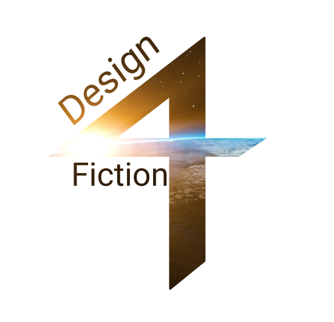

Bærekraftig, science fiction brettspill
Fra skoleprosjekt til deltidsjobb
Om prosjektet
Et gruppeprosjeket hvor vi hadde et sammarbeid med Cofutures.
Prosjektets oppgave gikk ut på å bruke science fiction til å
“muliggjøre spekulasjon, fantasi og forventning om mulige fremtider, inkludert fremtidige samfunn,
teknologier og kunnskap”
Vi valgte å lage et spill for å inspirere og motivere unge mellom 18-25 år å tenke mer bærekraftig.
Dette spillet inneholdt også science fiction elementer for spekulasjon og fantasi om et fremtidig samfunn.
Vi har jobbet hardt i dette prosjektet og er stolte over at vi fikk en A.
Dette prosjektet gikk fra et skoleprosjekt til å bli en deltidsjobb, hvor jeg sammen med en annen har jobbet
Videre for å ferdigstille brettspillet.
Oversikt over skoleprosjektet
Prosessen
Skoleprosjektet
- Startet med survey for å lære mer om sci-fi, spillmekanismer og annen inspirasjon fra eksisterende spill.
- Gjennomgående kontakt med våre kunder fra Cofutures som var er viktig ressurs for å komme i kontakt med sci-fi
og bærekraft eksperter.
- Workshop med "worst-idea" på Miro for kreativ tenkning for å finne ut av gode spill elementer som vi kan
inkludere i
vårt spill.
- Miro ble også brukt til å analysere all dataen vi samlet inn fra datainnsamlinger og samtaler med kundene.
- Digitale spilltester ved bruk av Zoom og Figma ble gennomført. Her flyttet og styrte vi spillet på figma, mens
de fikk sett sine kort og hatt diskusjoner.
Videre arbeid
- Videre ble det gjennomført flere brukertester med brukere hvor vi avdekket utfordringer som førte til endringer.
- Flere iterasjoner på design i figma.
- Flere interasjoner på tekstilig innhold til kortene.
Ferdig produkt
Vår ferdig prototype av spillet har det midlertidige navnet "Change or ciao".
Det er et brettspill med ulike felter og aktivitetskort som kan spilles på individuelle brett.
Spillet har som mål å utfordre spillerne til å tenke mer bærekraftig og inspirere de til å ta mer
miljøvennlige valg i hverdagen.
Individuellt skal spillerne lage en mer bærekraftig verden ved å spille forskjelligeaktivitetskort med ulike
verdier
Sammen har de som mål å nå målene og verden blir et bedre sted.
Spillet har også etiske dilemmakort hvor spillerne skal diskutere ulike dilemmaer eller problemstillinger
Dette er hoveddelen av læring og det er her vi ønsker å utfordre tankene til spilleren
Vi tok med oss spillelementer fra datainnsamlingen som feks. konkurranse, strategi og samarbeid.
Vi ønsket også å trekke inn ulike science fiction elementer.
Jeg, sammen med en fra gruppen har fått mulighet til å videreutvikle spillet til et ferdig fungerende spill
og vi jobber nå videre med dette i sammarbeid med Cofutures.
Det blir spennende og lærerikt å jobbe videre med dette og ser frem til å ha et større fokus på protptyping,
konseptutvikling og selve produktet.
I tillegg til å gjennomføre flere spilltestinger og workshops med brukere.
Hva har jeg lært?
Dette prosjektet har jeg lært om kunde kontakt. Tidligere har vi ikke hatt noen andre enn brukergruppen å
forholde oss til, men
her har kundene kommet med ønsker og innspill på hva de ønsker av resultat.
Selv om kundene kom med et ønske om et spill hadde vi mye frihet til å utforske ideer og konsepter selv uten
strenge krav vi måtte følge.
Det var også veldig lærerikt å arbeide med bærekraftighet og mulighet til å utforske mer bærekraftige måter å
designe på.